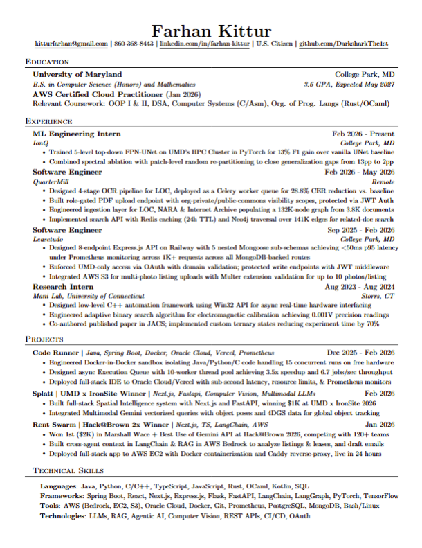

A photographer's darkroom for your commit history. Each commit is a frame of film; the ones worth keeping are developed into résumé lines and printed. This document is the visual reference for building it.
The whole product leans on one extended metaphor. Keep the language consistent in UI copy, component names, and code — it's the personality of the app.
A · 014), with SHA, message, and +/− diff stats.A near-black warm base lit by a single amber accent — the safelight. Greens and reds appear only as diff stats. Define these as CSS custom properties; names below match the prototype.
The warm glow is not flat fill — it's a radial amber wash over a diagonal gradient, applied to the app and panel backgrounds. Recreate it exactly:
A monospace UI voice (the machine / the contact sheet) against a serif editorial voice (the developed print). Pulled from Google Fonts.
| Role | Family | Size / spacing | Color |
|---|---|---|---|
| Résumé bullet | Playfair | 13px · 1.55 lh | #e2d2b4 |
| Name (print) | Playfair | 19px | #1f1408 on paper |
| Commit message | JetBrains | 12px | --t1 |
| SHA / stats / meta | JetBrains | 10px | --t3 / signal |
| Section label | JetBrains | 10px · .1em · uppercase | --t2 |
| Frame number | JetBrains | 9px · vertical-rl | --t3 |
| Buttons | JetBrains | 12px · .1em · lowercase | --accent-soft |
A fixed 1360 × 880 frame: a 52px top bar over a body split into the film-strip column (fluid) and a fixed 372px résumé panel.
| Element | Spec |
|---|---|
| Outer frame | 1360 × 880, column flex |
| Top bar | height 52px, padding 0 22px |
| Canister rail | padding 18px 30px 16px, gap 20px, items top-aligned |
| Frame row | 30px gutter + border-bottom row, padding 16px 0 16px 18px |
| Sprocket holes | 12 × 8, radius 2, gap 6, repeated across width |
| Résumé panel | flex: 0 0 372px, padding 30px 36px 32px |
These are live recreations at the prototype's exact values — colors, radii, and type are copy-ready.
#3a2410 → #E07B39 → #3a2410 + glow 0 0 22px rgba(224,123,57,.5). Letter and label tint to accent. Default = dark metal with a striped film-leader band. Letter (A–D) sits above the repo name, both centered below the canister. Click swaps the mounted roll and reloads the frame list.rgba(224,123,57,.05), pulsing placeholder (1.5s ease-in-out, opacity .35↔.85). Unexposed — trivial commit, no bullet; muted with a no exposure badge. Cut — 45% opacity with a rotated strike line; shows a restore control.
#ECE6D6 (classic polaroid — equal top/side border, deeper bottom) → black image mat #0A0705 at 13px padding → the résumé page image at its native 610 × 791 ratio. A 2px amber "wash" line sits at the image's bottom-left as a developing mark. Caption in the bottom border: serif name #1f1408, then mono role + amber #b5641f progress on one line. The image is the user's actual résumé render — swap resume.png for a live document thumbnail in production..1em tracking, radius 3. Hover deepens the glow. Inline frame actions — borderless text in green / red / amber, lowercase; color-only hover, no fill.A frame moves through these states. The class name on .frame drives the styling.
| State | Meaning | Visual |
|---|---|---|
.developed | Bullet generated & on the print | Serif bullet, amber rule, keep/cut/retake |
.developing | Bullet being generated now | Tinted row, pulsing "developing" placeholder |
.unexposed | Commit too trivial for a bullet | Muted, no exposure badge, no bullet |
.cut | Removed from the print by the user | 45% opacity, strike line, restore |
.developed.kept | Explicitly kept | Same as developed; counts toward the print |
| Trigger | Behavior |
|---|---|
| Click a canister | Set it active (amber glow), update the strip header label to the repo name, and load that repo's frames. Prototype stubs the swap with a class toggle + label update; wire to real repo data in production. |
| keep | Marks the frame kept; its bullet is included on the print. Updates the "frames kept" count. |
| cut | Removes the bullet from the print; frame goes to .cut (struck), offering restore. |
| retake | Regenerates the bullet for that commit (re-runs the "develop" step → brief .developing state). |
| develop & print | Compiles all kept frames into the résumé document and produces the printable output. |
| Developing pulse | @keyframes opacity .35 ↔ .85, 1.5s ease-in-out, infinite, on the placeholder only. |
Respect prefers-reduced-motion — drop the developing pulse to a static state. The frame list scrolls independently; canister rail, strip head, and sprockets stay fixed. The résumé panel's button is pinned to the bottom with margin-top:auto.
darkroom-reference.html (the full interactive design) · design.html (this pack) · resume.png (sample print image) · README.md (handoff doc).